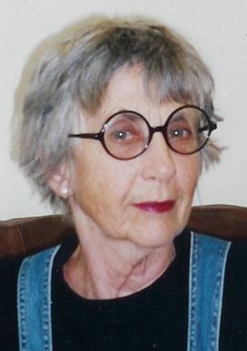

C.G. Jung Society, Seattle C.G. Jung Society, Seattle
C.G. Jung Society, Seattle C.G. Jung Society, SeattleSeminar: Saturdays, September 24, October 1, October 8, October 22, October 29, November 5,
10 a.m. to noon
Good Shepherd Center, Room 221, 4649 Sunnyside Ave. N., Seattle
$60
Advanced registration required.

A six-week seminar investigating C.G. Jung’s “new godimage”, his myth for Western civilization in this aeon. Using Lawrence Jaffe’s Celebrating Soul: Preparing for“If enough individuals have had that transformative experience [coniunctio]
within themselves, then they become seeds sown in the collective psyche which
can promote the unification of the collective psyche as a whole.
[H]ow many will it take?...I think each individual ought to live his life out of the
hypothesis that maybe one would do.” – Edward F. Edinger
The seminar will meet for six Saturdays for two hours, 10 a.m. to noon, at the Good Shepherd Center,
Room 221.
Advance registration is required, accompanied by a fee of $60.00, payable to the C.G. Jung Society of Seattle, 4649 Sunnyside Ave. N., Room 222, Seattle, WA 98103. Please use the provided preregistration form and include the correct amount. You can use the link provided to order the required text from Amazon.com. You can also order the text through the Society by contacting Bunny Brown, Librarian at (206) 547-3956.
For further inquires, you can reach Lynn Fox at (425) 453-9384.
Lynn Davis Fox, M.Ed., has been a counselor and educator since 1977,
specializing in addiction treatment and mid-life challenges. More recently, she
pursued an in-depth study of C.G. Jung’s works, focusing especially on his
writings concerning religion. This has inspired her to move beyond her rejection
of past religious dogma to a new spiritual opportunity where consciousness is the
key to discovery. She is eager to share this knowledge with others who are
seeking new and vital venues for religious experience.
Updated: 12 September, 2005
webmaster@jungseattle.org